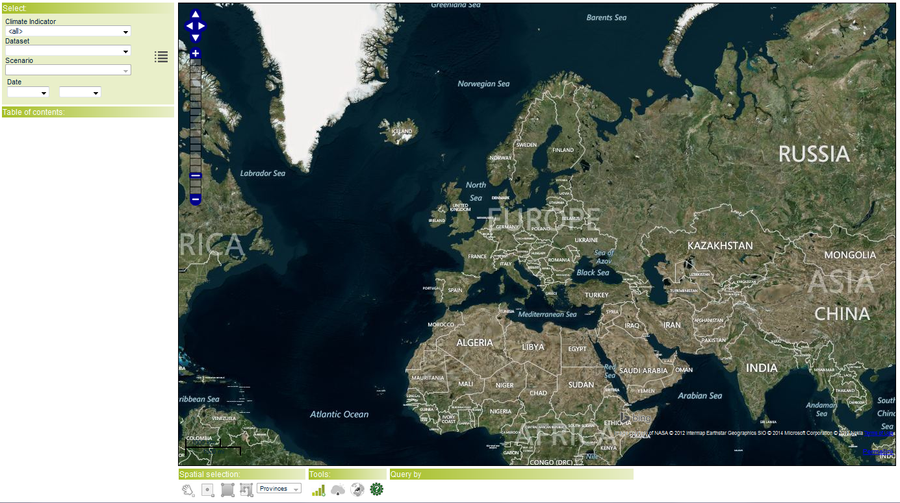

Click on
 to navigate through the map: move the mouse cursor over the map and
to navigate through the map: move the mouse cursor over the map and
The interface uses Bing maps based on a "Spherical Mercator projection" as shown in the following figure:
Click on to navigate through the map: move the mouse cursor over the map and
 to zoom in/out over the map;
to zoom in/out over the map;
Click on to open a new page with a full page map viewer.
